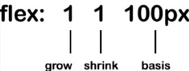

Глава 3
Динамически изменяемые разметки и адаптивные изображения.
Преобразование дизайна с фиксированными размерами в подстраеваемый.
Цель / Среда = Результат.
Пример:
Имеется страница с фиксированными размерами: 200px - левая колонка + 660px - основная центральная + 100рх - правая колонка = 960рх стандартный размер страницы.
Чтобы преобразовать эти размеры в подстраиваемые и пропорциональные, нужно воспользоваться формулой выше.
Такое строрение страницы позволит всем эл-там оставаться пропорциональными друг к другу. Но при слишком мелких размерах, некоторые колонки становятся слишком узкими. Поэтому нужно добавить контрольную точку, которая в какой-то момент выстроит все эл-ты в одну колонку.
Flexbox
Кратко о свойствах:
У Flexbox имеются 4 основных параметра:
- direction - направление.
- alignment - выравнивание.
- ordering - определение порядка.
- flexibility - динамическое изменение.
Текст безупречно выровненный по вертикали.
Пример 03-03.
В CSS-файле примера нам интересны следующие св-ва:Пример 03-04 - в этом примере особую роль играет св-во margin-left: auto;, которое применяется к последнему элементу и заставляет его отступить вправо на максимально доступную ширину.
Изменение порядка следования элементов.
Можно просто добавить к элементу-контейнеру свойство flex-direction: row-reverse;, а для смещенного эл-та (LastItem) вместо margin-left: auto написать margin-right: auto:
Пример подстравиваемого Flexbox (03-05)
inline-flex
display: inline-flex; является аналогом display: inline-block;, только для FlexBox. Пример.
Св-ва выравнивания для FlexBox
Пример.Выравнивание по поперечной оси.
- flex-start - заставит эл-т начинаться с начальной границы своего flex-контейнера.
- flex-end - заставит эл-т выровняться по конечной границе своего flex-контейнера.
Выравнивание по главной оси.
- flex-start (аналогично таким же св-вам для align-items)
- flex-end (аналогично таким же св-вам для align-items)
- center (аналогично таким же св-вам для align-items)
- space-between - заставит распределить свободное пространство поровну между элементами.
- space-around - распределит свободное пространство в равных долях вокруг элементов.
Свойство flex.

Cв-во flex является сокращенным определением трех отдельных свойств: flex-grow, flex-shrink и flex-basis.
Зафиксированный Footer.
Работает за счет св-ва flex со значением 1, которое применяется для контейнера с основным контентом (он находится между header и footer).А так же в результате применения св-в min-height: 100%; для body и height: 100% для html.
Изменение порядка следования эл-тов
order - позволяет пересмотреть порядок следования элементов внутри Flexbox.
Адаптивные изображения.
Наиболее распространенные сценарии, для которых понадобятся адаптивные изоб-я:
- Они (сценарии) будут переключать изображение, когда потребуется другое разрешение.
- Полностью менять изображение в зависимости от доступного пространства окна просмотра.
srcset
<img src="scones_small.jpg" srcset="scones_medium.jpg 1.5x, scones_large.jpg 2x" alt="Scones taste amazing">
- Сначала идет src и указывает на дефолтную версию изобр-я. (Которая так же будет использоваться, если браузер не поддерживает srcset)
- Далее через запятые идет список изображений из которых браузер сделает выбор.
picture (не поддерживается в IE и Opera mini) - контейнер, который содержит в себе все варианты изображений и может выводить нужное из них, в зависимости от заданного медиа запроса.
Пример использования:
<picture><source media="(min-width: 30em)" srcset="cake-table.jpg">
<source media="(min-width: 60em)" srcset="cake-shop.jpg">
<img src="scones.jpg" alt="One way or another, you WILL get cake.">
</picture>Тег img в данном контейнере обязателен!
<picture>
<source type="image/webp" srcset="scones-baby-yeah.webp"> <img src="scones-baby-yeah.jpg" alt="Again, you WILL eat cake.">